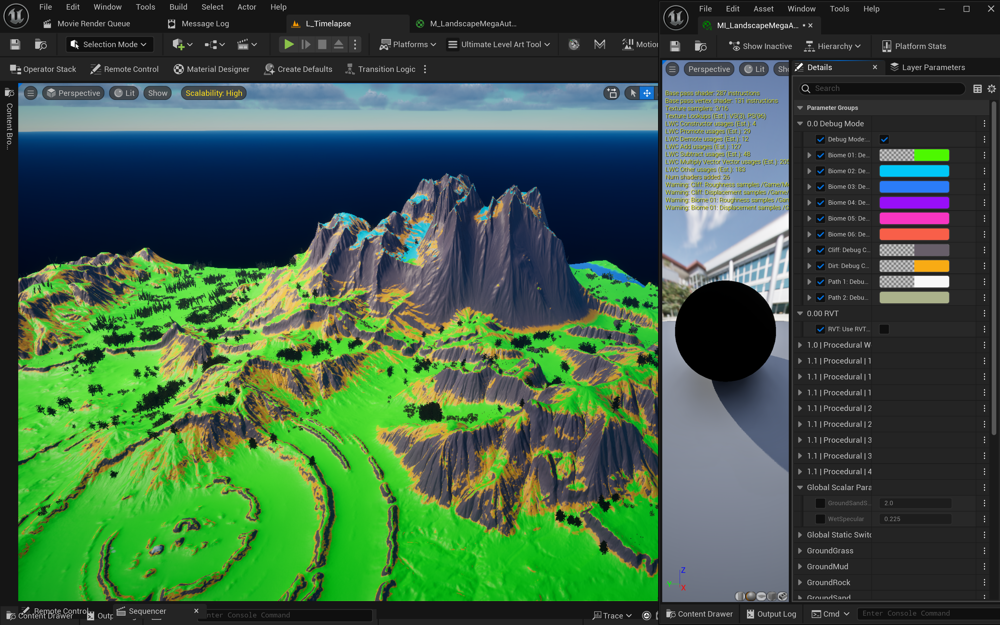
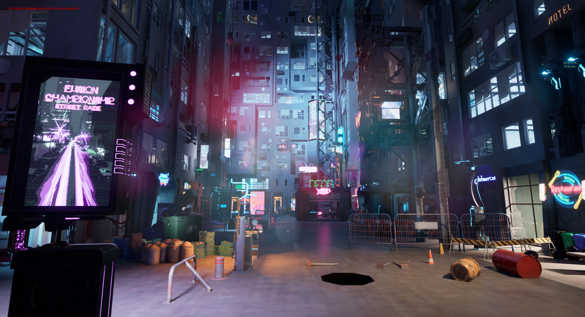
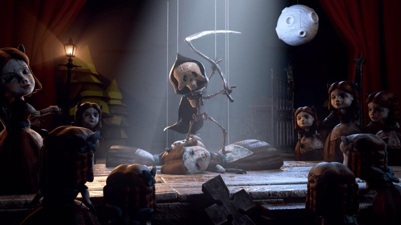
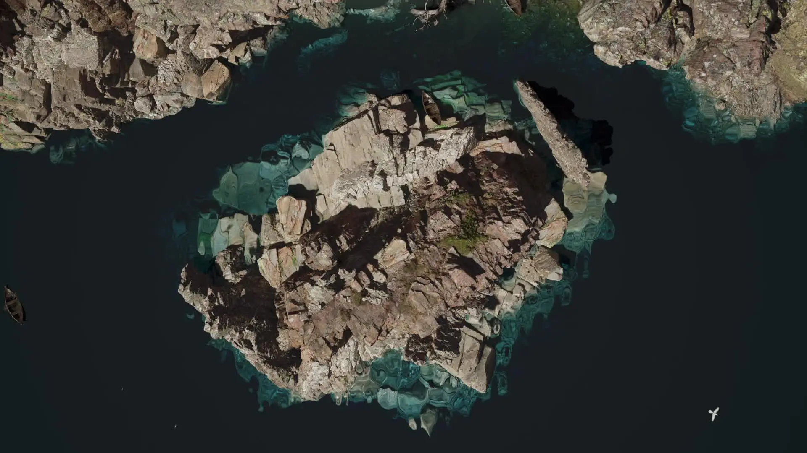
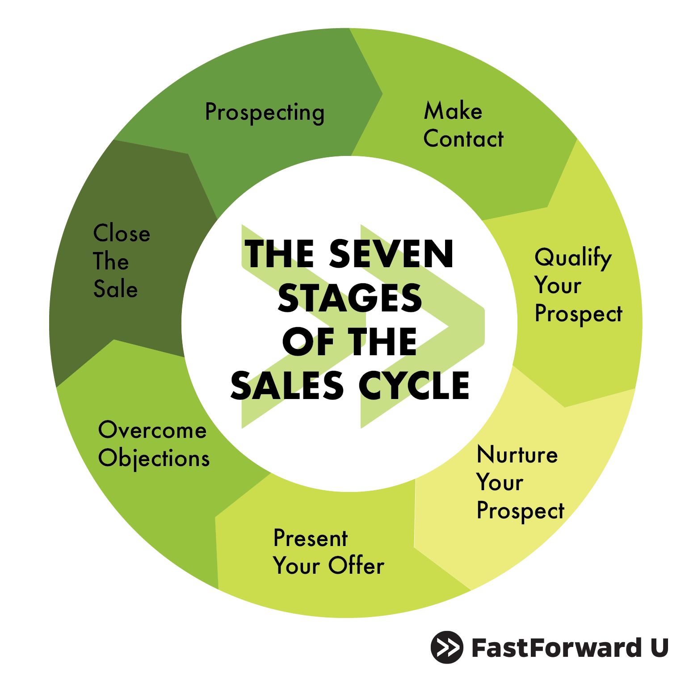
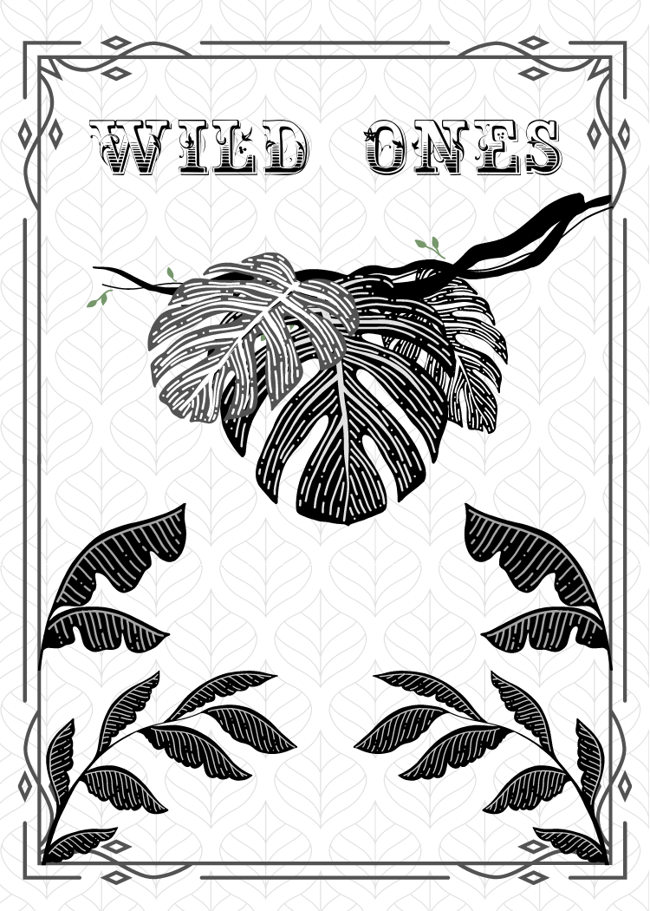
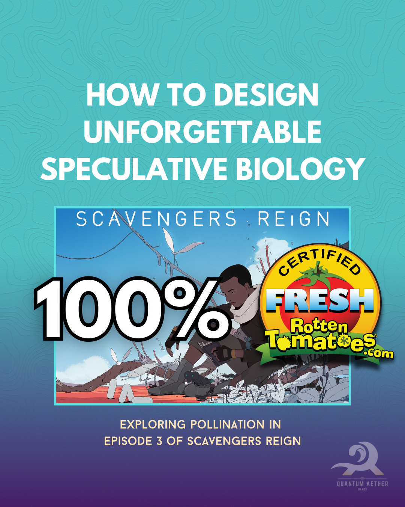

Projects
omnivOres Rule
solo developer (Unreal, C++, HLSL)
Exploring trans-species psychology & the beauty and brutality of nature from the perspective of an android.
2024

Roboleon
Game Programmer, Narrative Designer (Unity, C#)
In this Master's program project my goals were to setup a narrative dilemma & integrate save-load and UX systems into polished gameplay.
2024, 6 weeks

Environment Hackathon @AGI House
Hacker (Unreal, C++, Python)
Won 2nd place crafting a UE plugin that makes landscape crafting faster using MasterpieceX🏔️ (bc us tech artists have had enough material node spaghetti graphs 🍝😆).
2025, 6 hours

Totally Accurate Warehouse Simulator
Game Programmer (Unity, C#)
I programmed rigid body movement, procedural content, UI, and localization systems for an order delivery game.
2022, 1 week

King of Dareux
Game Programmer (Unreal, C++)
I worked as contract Gameplay and UI Programmer to fix bugs and implements features on an AA action-adventure RPG based on 4040 post-apocalyptic Earth.
2023, 3 months

Amazing Puppet Show
Game Programmer (Unity, C#)
I programmed Enemy AI, Movement, Menu systems in a 3rd-person 2.5D roguelike mini-game that uses simulated puppetry movement on a controller.
2022, 1 week

Quipu
Solo Developer (Unreal, C++, Unity, C#).
In a personal project I adapted my screenplay into Unity & Unreal games to gain development fluency between engines.
2023
Foliage Growth
Motion Designer (Unreal, C++).
In a personal project I created a growth simulation and animated it in sequencer.
2024
Flying Character
VJ, Motion Designer (Unreal, HLSL).
In a personal project I created a flying character and animated it sequencer for live control.
2024

Prey and Indigenous Futures
Blog Post
July, 2024

Metawalker
Narrative Designer, Writer (Mobile)
In an internship, I wrote character bios & chapters for the central storyline for an action-RPG mobile game in development.
2022, 5 months

Incubator Curricula
Educator, Visual Designer
I designed material for Johns Hopkins Curriculum while working as an intern; educating student entrepreneurs about business.
2022, 3 weeks

Wild Ones Card Game
Game Designer, Visual Designer
I designed a fast-paced and strategic print-and-play card game about adventure with a team @Maryland Institute College of Art.
2021, 3 weeks

Hermaeus Mora
Illustrator, Graphic Designer
I illustrated an eldritch deity from the Elder Scrolls franchise Hermaeus Mora in Adobe Illustrator for fun :).
2022, 2hr

Sunset Sticker
Illustrator, Graphic Designer
I illustrated a sunset sticker in Adobe Illustrator for fun :).
2021, 30min

Your browser does not support the img tag.Scavengers Reign & Authentic Speculative Biology
Blog Post
August, 2024

Escuela Amigos Mascot
Illustrator, Graphic Designer
I designed the logo "Jaguare" that is still used in official merchandise & marketing for the "Escuela Amigos School".
2013, 1 week

INTD Conference
Illustrator, Graphic Designer
While a medical research intern at Boston Children's Hospital and Harvard Medical School, I designed materials for the 2019 International Neural Tube Defect Conference using Illustrator and InDesign.